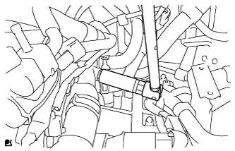

E.F.I. Water Temperature Sensor (2GR-FE) Removal |
| 1. Remove V-bank Cover Sub-assembly |
 |
Place both hands on the front of the cover and lift it upward to disengage the 2 front clips, then continue lifting upward to disengage the 1 rear clips, and remove the V-bank cover.
| 2. Remove Radiator Upper Air Deflector |
 |
Remove the 9 clips and the radiator upper air deflector.
| 3. Disconnect Battery Negative Terminal |
| 4. Remove Battery |
 |
Loosen the nut and disconnect the battery positive terminal. (*1)
Remove the bolt and nut, and remove the battery clamp.
 |
Disconnect the current sensor connector.
Remove the insulator.
Remove the battery.
| 5. Remove Engine Under Cover NO.1 |
Remove the 6 bolts and 7 clips, and remove engine under cover No.1.
| 6. Drain Coolant (Toyota Genuine Super Long Life Coolant) |
Loosen the radiator drain cock plug.
Remove the reserve tank cap and drain the coolant.
Loosen the cylinder block drain cock plug and drain the coolant from the engine.

| 7. Remove Air Cleaner Cap w/ Air Cleaner Hose |
 |
Disconnect the air flow meter connector. (*1).
Disconnect ventilation hose No.2. (*2).
Disconnect the hose band (*3)
Disengage the 3 clamps and remove the air cleaner cap w/ air cleaner hose.
| 8. Remove Air Cleaner Case |
 |
Remove the 3 bolts and clamp, and remove the air cleaner case.
| 9. Remove E.F.I. Water Temperature Sensor |
 |
Disconnect the E.F.I. water temperature sensor connector.
 |
Using SST, remove the E.F.I. water temperature sensor and gasket.